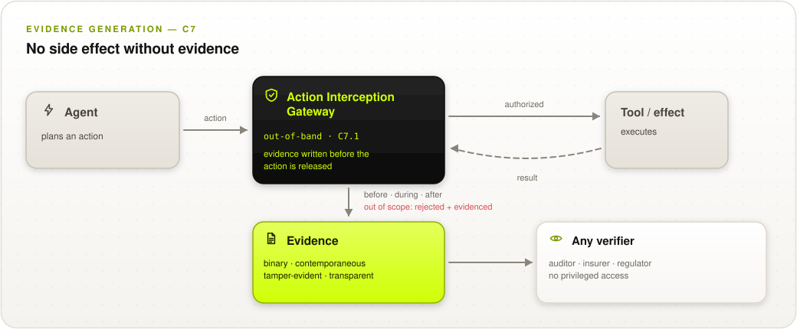
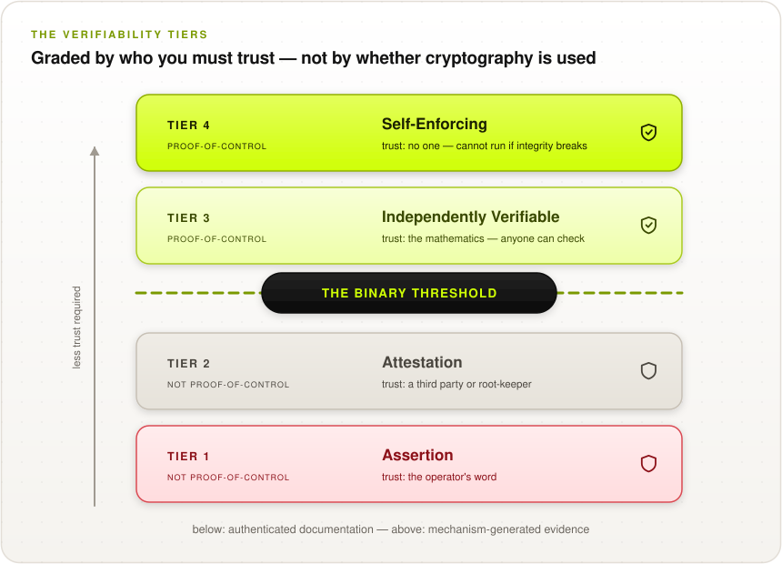
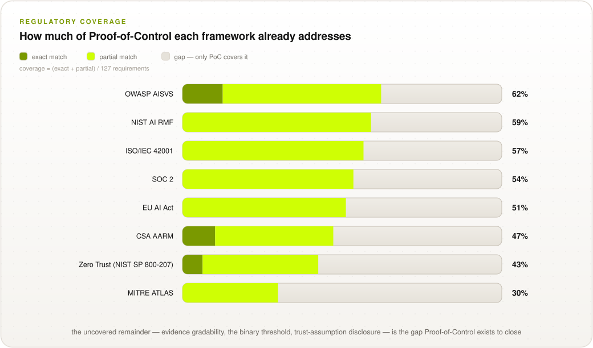
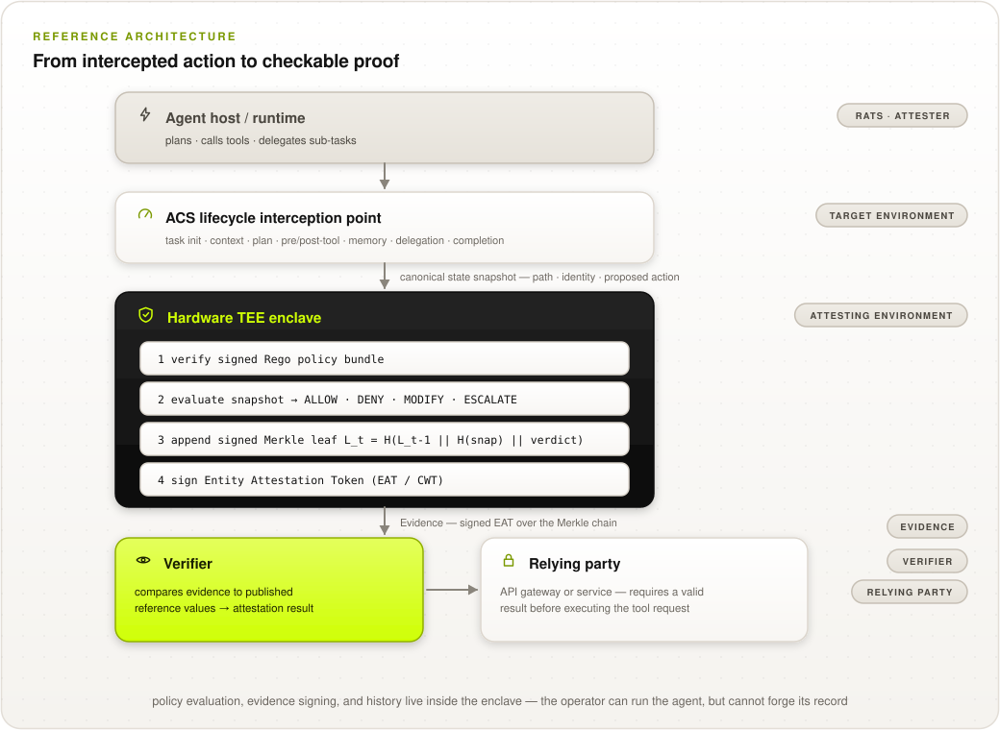

How to prove what your agents did — rather than promise it — and how to tell the difference when a vendor says they already do.
Parts I and II give security leaders the framing and the vocabulary to evaluate a claim. Parts III and IV are for the architects and engineers who have to build or buy it. Part V is procurement, audit, and regulatory position — read it before you sign anything.
Suppose you let a piece of software act on your behalf: read your records, call your tools, move your money. Afterward it tells you what it did. How would you check?
In nearly every deployment running today, you cannot. The only account of what happened is the system's own, and the party writing that account is the party you would be checking. Your agent's logs are produced by your agent's infrastructure, retained by your agent's operator, and presented to you on request. If that operator is a vendor, you are trusting their word. If it is your own platform team, your auditor is trusting yours.
This is not a hypothetical weakness. It is the ordinary condition of every agentic deployment, and it becomes acute for exactly the reason agents are attractive: they act faster and more often than anyone can review. An agent that takes four hundred actions an hour produces four hundred assertions an hour, and the number of people available to check them has not changed.
We call this the Verifiability Gap: the distance between what a system asserts about its own behaviour and what an independent party can establish. The gap has always existed in software. Agents widen it faster than governance can close it.
Three things compound. Agents act autonomously, so no human is in the loop to corroborate. They act at machine speed, so sampling catches a vanishing fraction. And they act through legitimate credentials, so the resulting activity looks exactly like authorized activity — because it is. An agent misused through prompt injection does not break in. It signs in.
The security consequence is specific: your existing controls will report that everything was permitted, and they will be correct, and you will still not know what happened.
Proof-of-Control is an open standard that closes the gap by changing who produces the evidence. Instead of the operator writing an account of what the agent did, the enforcing mechanism produces cryptographic evidence at the moment of action — evidence a third party can check without trusting the operator at all.
This guide covers what that means in practice:
This guide states what the standard does not establish as clearly as what it does — including a place where our own tier definitions overclaim, and which we have not yet fixed. A security framework that only tells you its strengths is a marketing document. Page 31 is the list of things this will not do for you.
Zero Trust replaced perimeter security with a premise: trust nothing, verify everything, assume breach. Proof-of-Control extends that premise one step, to the part Zero Trust leaves open — verify with what?
A zero-trust architecture authenticates and authorizes every request. It does not, by itself, produce an artifact that survives the authorization decision and can be checked by someone who was not there. When the incident review happens six months later, the policy engine's decision is gone and what remains is a log entry the operator wrote.
Four principles follow.
The thing that enforces the control also produces the record, cryptographically, at the moment it enforces. Nobody can write the record without enforcing, and nobody can enforce without writing the record. This is the whole idea; everything else is engineering.
Evidence emission is a precondition of action release, not a consequence of it. If the evidence pipeline is down, actions do not proceed. A system that keeps acting while its logging is broken has told you exactly how much it values the logging.
Not all evidence is equal, and the useful axis is not volume or retention — it is whose honesty the evidence depends on. A tier ladder built on that axis lets a buyer ask one question instead of forty.
This standard establishes deterministic facts: which model ran, on whose authority, with what input, producing what effect. It does not establish that the output was correct, fair, or wise. Those are human judgments and they stay human judgments. A framework that blurs that line will eventually be used to launder one as the other.
When you evaluate any control here, ask: could the operator produce this evidence without having done the thing it describes?
If yes, it is a log. If no, it is evidence. Most of what is sold as agent observability today fails this test, and fails it by design rather than by oversight — producing checkable evidence is harder and nobody was asking for it.
“The cost of doing falls toward zero. The cost of verifying stays pinned to human attention. So verification becomes the scarce thing.”
The premise this standard is built on. If checking must be done by machines, the evidence has to be the kind a machine can check.
Most organizations have logging and believe they have evidence. The difference is not volume — it is whether anyone but the operator can check it.
Application logs, SIEM feeds, and audit trails are useful operational tools. As evidence about a disputed action they share a defect: the party who would be blamed controls the record.
That is not an accusation of bad faith. It is a structural observation, and it holds even when everyone is honest, because the point of evidence is that it works when someone is not. An auditor who accepts your logs is not verifying your behaviour; they are verifying that your logs are internally consistent with your account of your behaviour.
Each of these is a real attack we ran against a working implementation, not a hypothetical.
| Failure | What it looks like |
|---|---|
| Alteration | A record is edited after the fact. Unsigned logs leave no trace of it. |
| Omission | An inconvenient step is dropped. Without sequence numbering, a missing step is indistinguishable from a step that never happened. |
| Truncation | Recent history is withheld. The shortened log is internally perfect. |
| Equivocation | Two different histories are shown to two different parties. Each is internally consistent and neither party can tell. |
The last one deserves emphasis, because it is the failure most people have never considered. An operator can present one history to a regulator and a different one to a customer. Both check out. Detecting it requires the two verifiers to compare notes — which means non-equivocation is not a property of your log at all. It is a property of your ecosystem.
Four properties. A record that lacks any one of them is a log.
The evidence either verifies or it does not. No judgment call, no confidence score, no "appears consistent with." A check that returns a probability has moved the decision back to a human, which is the cost we were trying to avoid.
Created at the moment of action, inside the transaction that performed it — not reconstructed later from mutable sources. A system that plans to rebuild authority from logs months afterward usually cannot.
Produced by the cryptographic mechanism, not the operator. Modifying, inserting, or reordering any record breaks a chain that anyone can check.
Everything that must still be trusted is written down. Not "this is secure" but "this is secure provided these five parties behave, and here they are." Page 12 is what that list actually looks like.
Ask your platform team, or your vendor: if you wanted to remove one action from the record, what would stop you?
If the answer is a policy, a control, or an access restriction, you have logging. If the answer is that the arithmetic would visibly break for anyone checking, you have evidence.
If evidence must be produced by the mechanism that enforces, then the architecture question is: where is the mechanism?
The answer that does not work is inside the agent. An agent that reports on itself has the same defect as an operator that reports on itself, one level down. Anything the agent controls, an attacker who controls the agent also controls.
The answer that does work is an interception point outside the agent, which every consequential action must pass through, and which the agent has no path around.

Not a library the agent calls. Not a middleware the agent could skip. A separate service, with the agent holding no network path or credential that reaches its tools directly. If the agent can call the tool without going through the gateway, everything downstream is decoration.
The gateway does not forward the action until the record is durably written. This is what makes "no side effect without evidence" true rather than aspirational, and it is the requirement that will generate the most pushback from your platform team, because it puts a write on the critical path.
This is the one people miss, and it is the subject of the most important thing we learned building this. Attesting "I evaluated this action and permitted it" says nothing whatsoever about what the machine then went on to do. A compromised host can obtain a perfectly valid attestation for a benign action and dispatch a malicious one.
Closing that requires one of three things: the credentials for the effect live inside the attested environment; or a single-use capability, cryptographically bound to the evaluated action, that the far end checks before executing; or egress confined to an attested enforcement point that admits only requests carrying matching evidence.
A vendor who attests policy decisions but does not mediate the effect channel is entitled to claim their evaluation is verifiable. They are not entitled to claim their actions are. The standard makes this explicit: without effect mediation, a deployment may claim Tier 1 or 2 only.
This is the single most common overclaim in the category, and it is easy to test — ask which of the three options they implement.
An evidence record is an Entity Attestation Token — an IETF standard format — carrying a defined claim set. The fields matter, so here is what each is for and what its absence costs you.
| Claim | Why a verifier needs it |
|---|---|
agent_id | Which agent instance acted |
initiating_user | On whose authority — the human-to-agent binding |
agbom_digest | What the agent was composed of: model, tools, prompt |
interception_point | Which lifecycle hook produced this record |
step_index | Position in the path; a gap exposes an omission |
chain_head | Running hash over all prior steps |
merkle_root + tree_size | Lets one record be proved without fetching the log |
policy_bundle_hash | The exact policy in force — without it, a verdict cannot be re-derived |
canonical_snapshot_hash | Commitment to what was actually evaluated |
verdict | Allow, deny, modify, or escalate |
measurement | What code was running, per the hardware |
The record carries a hash of what was evaluated, not the content. Anyone can later confirm what was evaluated by hashing it, and your evidence store never becomes a second copy of your customer database. For a regulated environment this is the difference between an audit capability and a breach liability.
The step index and running hash tie each record to every record before it. Dropping an inconvenient step breaks arithmetic rather than merely being impolite.
The policy bundle hash names the exact policy that produced this answer. "Which rules were in force in March?" becomes something you check rather than something you reconstruct from a change log and hope.
A machine-readable schema, a canonical serialization, and published test vectors are what make two implementations interoperate. Without them, two vendors both claiming conformance will produce records that do not validate against each other — and the natural fix, relaxing the comparison, silently removes the property the comparison existed to provide.
Evidence is graded by whose honesty it depends on. Somewhere on that ladder is a line: below it you are trusting somebody, above it you are checking. Where your vendor sits is the only question you need to ask first.
Most assurance schemes grade by how much was checked. This one grades by who you have to believe, because that is the axis a buyer can actually act on.
The system's own account. Useful for operations, worthless in a dispute, because the party with the incentive controls the record. Almost every agent deployment in production today is here, including many that describe themselves otherwise.
Records are signed and chained, so tampering is detectable — by anyone who has the keys and the log, both of which the operator holds. This is a real improvement and it catches careless failure. It does not survive a determined operator, because the operator can rewrite history and re-sign it. We demonstrated exactly this against our own implementation.
Evidence is produced inside an attested environment, and chain roots are published outside the operator's control at a declared interval. Now the operator cannot rewrite history without contradicting something already public, and a third party can check without asking permission. This is the binary threshold.
The mechanism does not merely record; it refuses. When evidence cannot be generated, in-scope actions stop — and the halt is enforced somewhere the operator cannot reach, which in practice means at the relying party. Tier 4 is not "better logging." It is the difference between a system that documents a violation and one that cannot commit it.
If your operator wanted to hide an action, what would stop them?
Tier 1: nothing. Tier 2: their own controls. Tier 3: arithmetic that is already public. Tier 4: the action would not have completed.
Between Tier 2 and Tier 3 is a discontinuity, not a gradient. Below it, the evidence is ultimately backed by somebody's word. Above it, it is backed by something anyone can check. No amount of Tier 2 adds up to Tier 3, in the same way no amount of a promise adds up to a receipt.

Three things, and all three are needed — this is the part where partial credit does not exist:
Miss any one and you are at Tier 2 with extra steps. Anchoring without attestation publishes a root the operator computed. Attestation without anchoring lets the operator withhold the recent past. Both without non-equivocation lets them show you a different history than they show your regulator.
A vendor implements attestation, publishes roots to their own transparency log, and claims Tier 3. But if only one verifier ever reads that log, equivocation is undetectable — non-equivocation is a property of the ecosystem, not of the product.
Ask: how many independent parties check your roots, and what happens when two of them disagree?
The standard currently says that at Tier 3 "there is nobody left to trust." That sentence is wrong, and we can show it is wrong rather than suspect it.
We deployed the reference implementation inside a real Intel TDX trust domain and wrote down what a verifier must actually accept in order to believe a single measurement:
| You must trust | To believe |
|---|---|
| Intel | the TDX module and CPU behave as specified, and the provisioning key was not misissued |
| Intel's certification service | the collateral fetched to check the quote is authentic |
| The quoting enclave | it signs reports honestly |
| Your cloud provider | the host does not extract domain memory by a route outside the hardware threat model |
| Whoever publishes reference values | the measurement you compare against belongs to the code you believe it does |
Anchoring removes none of these. It makes the history publicly auditable — a real and valuable property, and the reason Tier 3 is worth reaching. But the measurement is still established by that chain of parties.
Public verifiability means anyone can check the evidence with published tools, without the operator's permission. Hardware attestation and anchoring genuinely deliver this.
Trust independence means no party's honesty is load-bearing. Attestation does not deliver this. It relocates trust from the operator — who has a direct interest in your incident — to a hardware vendor, who has a diffuse one. That relocation is a real security gain. It is not elimination.
Because you will be sold the stronger claim, possibly by us, and you should be able to price it correctly. A vendor saying "cryptographically verifiable, zero trust required" is describing public verifiability and calling it trust independence. The right response is not to reject the claim — public verifiability is worth a great deal — but to ask for the list above, filled in for their deployment.
Every conformance claim must publish its trust-assumption disclosure: for each evidence mechanism, every party, hardware element, and mathematical assumption that must hold. A vendor who cannot produce that page has not thought about it, and a vendor whose page is short is either unusually elegant or not being straight with you.
Work through this against a deployment you already run. Most organizations discover they are at Tier 1 with good intentions.
"We have signed audit logs, so we're Tier 2 at least." Ask who holds the signing key. If the answer is your logging service, and your logging service is operated by the same team that operates the agent, then the signature attests that your infrastructure produced the record — which was never in doubt.
Verification is not one question. It is six, and a deployment can be excellent at one and absent at another — which is why a single "we're compliant" tells you almost nothing.
Artifact lineage: model identity by digest, signed manifests, supply-chain verification, and the composition of the agent itself — its tools, prompt, and model manifest.
What to ask for. The digest of the model actually loaded, verified at load time rather than recorded at deploy time. An agent bill of materials carried in every record. And the honest question: does the AgBOM update when the agent retrieves a document into context, or only when you redeploy?
Where it is weak today. Build-time provenance is mature; runtime composition is not. An agent's effective composition changes continuously as it retrieves context and writes memory, and most implementations commit to a manifest captured at task start. That is accurate and close to useless for an incident three steps later.
What was read and written, evidenced without re-leaking it. Records commit to a digest of the data, never the content.
What to ask for. Confirmation that the evidence store holds commitments rather than payloads — otherwise your audit trail is a second copy of your most sensitive data, with a longer retention period and broader access than the original.
What to watch. Digests hide content, not metadata. Timing, volume, ordering, and target resources remain visible in the chain. For a health or financial workload, decide explicitly whether that metadata is acceptable in an externally anchored log, because anchoring is what makes it durable.
Movement between organizational, jurisdictional, and compute boundaries: which boundary, when, under what authority, and whether the evidence chain survives the crossing.
What to ask for. If your agent moves between clouds or vendors, ask what joins the two evidence chains. The usual answer is nothing — each side is internally tamper-evident with an unexamined gap between them, and the gap is exactly where something would be hidden.
Be aware. This is the least developed area of the standard, with five requirements, and the working group has not yet settled whether cross-domain continuity is a portability concern or a fifth evidence property. If multi-cloud agents are on your roadmap, this is where to apply pressure.
The grant, per-action evaluation against it, blocking at the interception point, parameter schema validation, per-task credentials, and human approval records.
The requirement most deployments lack: path-aware evaluation. Authority must be evaluated against the sequence, not just the action. Reading a customer record is permitted. Sending an email is permitted. Reading the record and then sending it is an exfiltration, and a per-action check permits it at every step.
What to ask for. Whether the policy engine sees the path. Then ask what it costs you — a path-aware monitor with no way to clear an accumulated label refuses around 42% of perfectly legitimate work, which is why the next question matters more.
The follow-up that separates real deployments from demos. How does the monitor verify a declassification? We measured this: declassification the monitor cannot check trades 1.6 points of detection for every point of false-rejection relief, and at full coverage detection reaches zero. Verified declassification — where a trusted redaction tool genuinely removes the content — improves both at once.
A stable identifier for the agent instance, binding to the initiating principal, and credentials bound to an attested environment.
What to ask for. That the agent's credential is bound to the measured environment, not merely issued to it — the key digest carried inside the attestation, so the statement is "this key lives in this measured environment" rather than two facts that arrived together.
Open question worth tracking. Whether an agent can be accountable and unlinkable at once. Today an agent transacting with a vendor reveals your organization, your user, and your activity volume with every action. Under data-minimization obligations that is hard to defend, and the standard does not yet offer an answer.
Execution environment integrity, hardware-rooted attestation, sandboxing of generated code and untrusted tools, and evidence key lifecycle.
What to ask for. Which platform, which measurement, compared against whose published reference values — and how often the measurement is refreshed. That last one matters more than it sounds, for reasons on page 21.
And on retention. If evidence must remain believable for seven years, ask what happens when the signature scheme does not. Post-quantum or hybrid signing costs size, not speed.
Before adopting anything new, it is fair to ask how much your existing frameworks already cover. We coded all 127 requirements against eight external frameworks, requirement by requirement.

The partial column is enormous and the exact column is nearly empty. Five of the eight frameworks have zero exact matches.
Read that carefully, because it is the whole argument in one number. These frameworks ask for nearly every control this standard asks for. What they do not ask for, essentially anywhere, is machine-made evidence that the control actually held, checkable by someone who does not trust you.
Your SOC 2 report says a control was designed and operating. It does not produce an artifact your customer's auditor can independently verify without asking you for it. That is not a criticism of SOC 2 — it is a different instrument for a different purpose, and it was designed before the party being audited could act four hundred times an hour.
You are probably closer than you think on controls and further than you think on evidence. The gap concentrates in three places: grading evidence by how independently it can be checked, disclosing what must still be trusted, and self-enforcing execution. Those are the requirements no existing framework asks for, and they are the reason this standard exists rather than a profile of an existing one.
If you already run SOC 2 or ISO 42001, start from the crosswalks rather than from zero. Roughly half to two-thirds of what this standard asks for maps to something you already do — the work is upgrading those from documented to evidenced, not building them.
Where to intercept, what it costs on real hardware, and the failure modes we found by building it — including three that were defects in our own implementation.

Eight lifecycle points. Which you instrument determines what your evidence can answer, and instrumenting only the last one is the most common shortcut.
| Point | Answers |
|---|---|
| Task initialization | What was asked, by whom |
| Context assembly | What informed the decision |
| Plan generation | What it intended |
| Pre-call tool invocation | What it was about to do |
| Post-call tool result | What came back |
| Memory write | What will influence future runs |
| Sub-agent delegation | What authority was passed on |
| Task completion | What it claims it did |
The highlighted row is the one that must be non-negotiable: it is the last moment before an effect leaves your boundary, and it is where a capability can still be checked.
Inside the attested environment, or the measurement attests nothing relevant. A policy engine running outside the enclave, feeding results in, produces evidence that an enclave signed a number somebody else computed.
The capability must carry something the far end can recompute unaided. We learned this the hard way — see page 22.
The anchoring interval bounds how much recent history can be hidden. It is arithmetic: decide how many actions you could tolerate an adversary concealing, divide by your action rate. Publishing every second costs under a hundredth of a percent of wall-clock time and leaves roughly 5,000 actions in the window.
Measured against a design budget of 15 ms per intercepted action — the point at which users notice — on a working implementation rather than an estimate.
| Component | Mean | p99 |
|---|---|---|
| Canonicalization and digest | 3.7 µs | 8.0 µs |
| Policy evaluation (path-aware) | 0.4 µs | 1.1 µs |
| Signing (Ed25519) | 84.3 µs | 110.1 µs |
| Chain and tree append | 0.7 µs | 3.7 µs |
| End-to-end per action | 201.5 µs | 254.8 µs |
Signing dominates at roughly 87%. The policy evaluation everyone worries about is negligible, and — importantly — stays negligible: cost per step is flat from 10 to 50,000 steps, because the monitor keeps a bounded summary rather than re-reading the whole history.
We deployed on real Intel TDX hardware with an identical non-confidential instance as a control. Running inside a trust domain costs 6.2% — about ten microseconds. That is the good news, and it was previously unmeasured.
Producing a hardware quote costs 39.5 ms. That is 2.6× the entire per-action budget on its own.
| Quote refreshed every | Cost per action |
|---|---|
| 1 action | 39,666 µs |
| 10 actions | 4,113 µs |
| 100 actions | 557 µs |
| 1,000 actions | 202 µs |
Per-action attestation is not expensive, it is impossible. Every real deployment amortizes — which means your actions rest on a measurement taken before them. Ask your vendor for their attestation refresh interval. If they have not thought about it, they have an exposure window they have not measured.
Storage: roughly 1.3 GB per million actions classically. Post-quantum signatures raise that about eightfold — and switching the encoding from JSON to CBOR halves it back, which saves more than the algorithm choice costs.
An operational question that decides whether audit is continuous or annual: to check that one action is genuinely in the log, how much do you have to fetch?
With a plain hash chain, all of it. Each link depends on the previous one, so proving record 500,000 means replaying from the beginning. An auditor spot-checking a single action downloads the entire log.
With an append-only Merkle tree — the structure Certificate Transparency has used since 2013 — the answer is a proof logarithmic in log size.
| Log size | Replay chain | Check a proof |
|---|---|---|
| 1,000 records | 1.2 MB | 1.5 kB |
| 10,000 | 12.3 MB | 1.7 kB |
| 100,000 | 122.7 MB | 1.8 kB |
At 100,000 records that is roughly 69,000 times less data, and the gap widens with every record written because one cost is linear and the other logarithmic.
In operational terms: a thousand agents at a hundred actions a day produce 36.5 million records a year. Spot-checking one sampled action costs about 2 kB. Replaying the chain costs 44.8 GB — and costs the same whether you wanted to check one record or a million.
A consistency proof establishes that today's log is an append-only extension of the one published last week — that nothing was rewritten in between. This is the check that catches an operator who holds the signing key, and it is worth understanding why.
Given the key, an operator can alter a record in the middle of the log, recompute every link after it, and re-sign the whole history. The result has exactly the right length, every signature verifies, and replaying it finds nothing wrong — because there is nothing internally wrong with it. It is a perfectly consistent history of events that did not happen.
The only thing that contradicts it is a root published before the rewrite. Which means the check is not "does the log verify" but "does the log agree with what was already public."
Ask: when you verify a log against a published anchor, do you compare the record count, or the root?
Comparing the count catches truncation and misses rewriting entirely. Our own verifier made exactly this mistake and accepted a forged history until we found it — which is why the requirement now says "compares the recomputed root against the anchored value rather than only against a step count."
We built an attack harness that runs eleven scenarios twice — once against a system missing the relevant requirement, once with it. All eleven succeed when the requirement is absent. Three of them were live defects in our own implementation, found by review rather than by design.
| Attack | Without the requirement |
|---|---|
| Snapshot substitution | Evidence attests a benign action while a malicious one executes |
| Log alteration | Records edited with no trace |
| Omission | A dropped step looks like one that never happened |
| Head truncation | Recent history withheld; the remainder is perfect |
| Equivocation | Two histories, two parties, neither can tell |
| Path composition | Read and send each within grant; together an exfiltration |
| Capability replay | A bearer token reused for a second effect |
| Pipeline failure | System keeps acting while logging is down |
| History rewrite | Key-holding operator rewrites and re-signs; replay finds nothing |
| Unconfigured mediation | The binding check is enabled and silently does nothing |
| Ticket/record mismatch | A valid capability shown beside the wrong record |
The tenth is worth describing in full, because it is the failure most likely to be sitting in a system you already run.
Our relying party performed the check that binds an executed action to the evidenced one. It was enabled. It verified the signature, the measurement, the resource, and the nonce. And it returned match whenever it could not actually perform the binding check — because the check required a callback into the enclave that almost no real endpoint could supply.
So an endpoint that believed it was enforcing would execute a substituted action and report success. A security check whose default is "accept when unconfigured" is worse than no check, because it tells you it worked.
The fix was to give the relying party something it can recompute unaided — a digest of the action itself, carried in the capability — and to refuse outright when it can do neither.
Take the eleven rows above to your own deployment and ask which you could survive. Then ask your vendor to demonstrate — not describe — their behaviour under three: pipeline failure, substitution, and a history rewrite by someone holding the key.
The third one is the one that separates Tier 2 from Tier 3, and it is the one most implementations have never tested.
Nobody reaches Tier 3 in a quarter. A workable sequence, and what each phase buys.
Stand up the interception gateway as a separate service. Route every consequential action through it. Emit structured records at the pre-call point at minimum. Do not sign anything yet.
Buys: you learn what your agents actually do, which is usually a surprise, and you find the bypass paths before an attacker does.
Sign records, hash-chain them, add monotonic sequence numbers. Move evidence emission before action release. Add failure alerting.
Buys: Tier 2, and detection of careless failure and outside tampering. Not detection of a determined operator.
Move policy evaluation into an attested environment. Bind the evidence key into the attestation. Anchor roots externally at a declared interval. Stand up a second independent verifier so equivocation is detectable. Mediate the effect channel.
Buys: Tier 3 — evidence a third party can check without trusting you. This is the phase with real engineering cost and the one worth budgeting properly.
Fail closed when evidence cannot be generated, with the halt enforced at the relying party. Demonstrate it by test.
Buys: Tier 4, and a class of incident that becomes structurally impossible rather than merely detectable.
Do not scope this to every agent at once. Pick the deployment with the largest blast radius — the one with write access to something you would have to disclose — and take that one to Tier 3. The requirements are cumulative and the second deployment costs a fraction of the first.
And declare your scope honestly. A narrow scope with strong evidence is defensible; a broad claim resting on a narrow implementation is the thing auditors are trained to find.
The questions that separate a real implementation from a good deck, how to read a conformance claim, and where regulation is heading.
Ordered so the early ones disqualify quickly. If the first three do not get straight answers, the rest will not matter.
A conformance statement has three stages, and the stage is doing more work than the tier.
| Stage | What was actually checked |
|---|---|
| Self-Declared | The vendor asserts it. Nobody independent looked. |
| Third-Party Assessed | An assessor examined it at a point in time. |
| Continuously Monitored | Conformance is checked on an ongoing basis, with results available. |
A Self-Declared Tier 3 claim and a Third-Party Assessed Tier 2 claim are not comparable on a single axis, and a vendor quoting only the tier is quoting the flattering half.
1. One tier for the whole product. Domains differ. A uniform claim suggests nobody assessed them separately.
2. No trust-assumption disclosure. Either it was not thought about, or it was and the page was inconvenient.
3. "Zero trust required" or "trustless." Page 12. Ask for the list.
4. Scope described in marketing terms. "Our AI platform" is not a boundary. Components, environments, and action classes are.
5. Attestation without effect mediation. Entitles them to claim the evaluation is verifiable, not the action.
6. A claim that has never failed anything. Every real implementation has a list of what it does not cover. A vendor without one has not looked.
Cryptographic evidence prevents log forgery. It does nothing about scope gaming, because scope is still declared by the operator. A cryptographically perfect claim over a narrow scope may mislead more effectively than a weak claim over a broad one — precisely because it reads as rigorous. When you review a claim, spend your time on the boundary section, not the cryptography.
The standard is written to be audited: every requirement is phrased as something you can go and check, and every section carries auditor-evidence guidance naming what to collect and what to test.
Requirement levels are aligned one-to-one with the tiers, so the tier being claimed tells you which requirements are in scope. Auditing a Tier 3 claim means testing Levels 1 through 3; Level 4 requirements only apply to a Tier 4 claim.
Documentation review will not find the failures that matter. These will.
| Test | What a pass looks like |
|---|---|
| Attempt a direct tool call from the agent runtime, bypassing the gateway | It fails — no network path, no credential |
| Make the evidence store unavailable, then submit an action | The action is refused and the failure is recorded |
| Submit action A for evaluation, attempt to dispatch action B | B is refused at the relying party |
| Alter one record in a test copy and run their verifier | Detected, with the record identified |
| Remove a record and re-present the log | Sequence gap detected |
| Rewrite a historical record and re-sign the whole chain | Rejected against the anchored root |
| Request an inclusion proof for one sampled record | Verifies against the published root without the rest of the log |
| Seed a test agent outside the declared inventory | It surfaces as a reconciliation finding |
The sixth is the one most implementations fail, and failing it means the claim is Tier 2 however it is labelled.
That last one is a quiet integrity check: if reading the evidence store does not produce its own record, access control over evidence is weaker than claimed.
Proof-of-Control does not replace anything you already answer to. It supplies the evidence layer those regimes assume and rarely require.
| Regime | How this fits |
|---|---|
| EU AI Act | Art. 12 automatic logging and Art. 19 retention describe records; this makes them verifiable by someone who is not you. Relevant to high-risk obligations and post-market monitoring. |
| SOC 2 | Same role in the ecosystem, with a cryptographic stage SOC 2 never had. Your CC7 controls stay; the evidence behind them upgrades. |
| ISO/IEC 42001 | Requires an AI management system and documented control. This evidences that declared controls held at execution rather than at design. |
| NIST AI RMF | MEASURE and MANAGE functions need evidence to measure against. This supplies it. |
| HIPAA | Audit controls and integrity requirements map directly; the delta is operator independence. |
| Zero Trust (SP 800-207) | Complementary halves. Zero trust decides; this evidences the decision and what followed it. |
Two things are converging. Regulators are moving from asking organizations to describe their controls toward asking them to demonstrate them — and agents are making description less credible by acting faster than any description can track.
The practical consequence for a security leader: the evidence you produce over the next two years is what you will be asked to show for the period you produced it. Retention obligations run backwards, and you cannot retroactively make a log tamper-evident.
Take your highest blast-radius agent and try to answer, using only what exists today, what it did on a specific day last month — without asking the team that operates it.
The difficulty of that exercise is your verifiability gap, measured in the only units that matter. Most organizations find they cannot complete it, and the discovery is worth more than any framework document.
The gap between what a system asserts about itself and what anyone else can establish is not new. Agents make it consequential, because they act faster than the assertion can be checked and more often than anyone can sample.
Closing it does not require believing anything about AI. It requires one architectural commitment — that the mechanism which enforces also produces the record — and then a series of unglamorous engineering decisions about where to intercept, what to sign, how often to anchor, and what happens when the pipeline breaks.
The measurements in this guide should be reassuring on cost and sobering on effort. The cryptography is not the hard part: the full evidence pipeline costs about 1.3% of a fifteen-millisecond budget, and running inside a real trust domain adds six percent. The hard parts are architectural — routing every action through a gateway with no bypass, mediating the effect channel, finding a second verifier who will actually check your roots — and organizational, because someone has to own a scope declaration they would defend in public.
Grade evidence by whom you must trust. Not by volume, retention, or how sophisticated it sounds. That single axis converts an unbounded technical evaluation into one question you can put to a vendor and get a checkable answer to.
The threshold is real and it is binary. Below it, your evidence is ultimately somebody's word. Above it, it is arithmetic anyone can redo. No quantity of Tier 2 accumulates into Tier 3, and the three things required to cross — attested generation, external anchoring, non-equivocation — admit no partial credit.
Ask what is still trusted, and expect a list. A framework that claims to have eliminated trust has relocated it somewhere you have not looked. The useful vendor is not the one with no assumptions; it is the one who can hand you theirs.
Do not begin with the standard. Begin with the exercise on page 29: pick your highest blast-radius agent and try to reconstruct a specific day without asking the team that runs it. Whatever you cannot establish is the thing to fix first, and it will be more specific and more actionable than any requirement list.
Then take one deployment — not all of them — to Tier 3 properly. The requirements are cumulative and the second deployment costs a fraction of the first. An organization with one genuinely verifiable agent and an honest scope declaration is in a considerably stronger position than one with a platform-wide claim nobody has tested.
“Prove, rather than promise, what your agents did.”
If any of this is wrong, it should be possible for you to find out — which, in the end, is the entire point.
A framework that only lists its strengths is a marketing document. Here is the other half, including one place the standard currently overclaims and has not yet been fixed.
This establishes deterministic facts about execution: which model ran, on whose authority, with what input, producing what effect. It says nothing about whether the answer was correct, fair, or wise — or whether the boundaries someone set were the right boundaries. Those remain human judgments, and any product that blurs the line will eventually be used to launder one as the other.
Our own tier definitions say that at Tier 3 "there is nobody left to trust." That is wrong, and page 12 is the five-party list that shows it. Anchoring delivers public verifiability, not trust independence. Fixing the definitions properly is a change to the standard we have identified and not yet made.
Scope is declared by the operator. Cryptographic evidence over a narrow scope is cryptographically perfect and potentially more misleading than weak evidence over a broad one, because it reads as rigorous.
We deployed on real Intel TDX hardware and measured what it costs. We did not compromise a hypervisor, and the cloud provider operates the one underneath. What we showed is that the construction works on hardware that claims to resist a hostile host — not that the resistance holds.
An agent transacting with a third party currently reveals your organization, your user, and your activity volume with every action. Whether accountability and unlinkability can coexist is an open question in the working group, not a solved one.
When an agent moves between clouds or vendors, each side can be internally tamper-evident with nothing joining them. The construction that closes that seam is not yet specified.
Because you will be evaluating vendors against this standard, and the ones worth buying from will have their own version of this page. A supplier who cannot tell you what their system does not establish has either not looked or would rather you did not.
Ten chapters, 127 testable requirements, each phrased as something an auditor can go and check, with auditor-evidence guidance per section. Appendices cover the glossary, a nine-mechanism proof inventory, a 32-threat model with honest coverage grades, and every open working-group question.
github.com/Task-force-for-AI-agents-in-Healthcare/ov-poc-standard
All 127 requirements as tickable lists, plus CSV and JSON exports for GRC tooling. Generated from the normative text, so it cannot drift from it.
A working evidence pipeline: interception, path-aware policy, hash chain and Merkle tree, capability-bound dispatch, anchoring, gossip, and independent verification — with an eleven-scenario attack harness and the benchmarks quoted in this guide. Including the deployment script that runs it on real Intel TDX hardware.
CDDL for the CWT/CBOR rendering, JSON Schema for JWT, the canonicalization rules, and sixteen signed test vectors — ten of them negative. What you need to build a second implementation that interoperates with the first.
The formal treatment: threat model, theorems and what they do and do not establish, the framework coverage study, and the full measurements — including the attacks that were defects in our own implementation.
The standard is a working draft and the open questions are genuinely open. The identity-unlinkability question, cross-boundary continuity, and the tier definitions are all live, and practitioner input is what the working groups are short of — particularly from people running agents in regulated environments.
The most useful contribution is not agreement. It is a requirement you tried to audit and could not, a claim you tested and found overstated, or a deployment where the architecture does not fit.
Three of this standard's requirements exist because building the implementation proved the specification wrong. That is the contribution we want most.
Proof-of-Control is stewarded by the Advanced AI Society. This guide reflects the working draft of the standard at v0.1 and is offered as a framework for your own evaluation — not as legal, compliance, or security assurance for any particular environment.